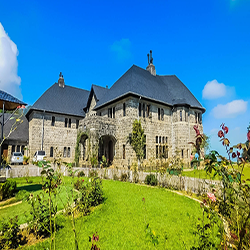

Explore Sri Lanka
LETS GO !
Sri Lanka, an island of unparalleled beauty, is home to a rich tapestry of history, culture, and natural wonders. From ancient fortresses and sacred temples to breathtaking landscapes and colonial charm, the island offers a diverse range of attractions that captivate every traveler. Whether you're seeking spiritual serenity, historical exploration, or scenic adventures, Sri Lanka promises an unforgettable journey.
Galle Fort
A UNESCO World Heritage Site, Galle Fort is a historic Dutch-built fortress along Sri Lanka's southern coast, known for its cobblestone streets, colonial architecture, and vibrant boutiques.
Temple of Tooth Relic
Located in Kandy, this sacred Buddhist temple houses the revered relic of the Buddha's tooth, attracting pilgrims and tourists alike.
Sigiriya

Rising majestically from the plains, Sigiriya is an ancient rock fortress adorned with frescoes, water gardens, and breathtaking summit views
Adam's Peak
A sacred pilgrimage site, Adam's Peak (Sri Pada) is known for its striking views and the revered footprint impression at its summit.
Nine Arches Bridge
A marvel of colonial-era engineering, this iconic bridge in Ella is surrounded by lush greenery, making it a picturesque spot for photography.
Adisham Bungalow
Nestled in Haputale, this charming stone bungalow, once a colonial residence, is now a monastery surrounded by serene gardens and stunning mountain views.